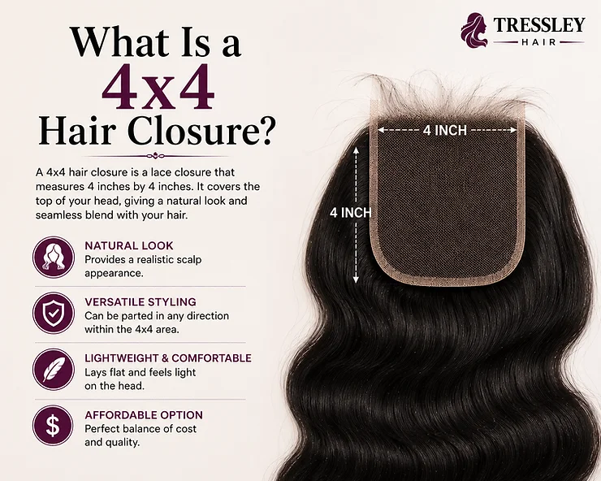
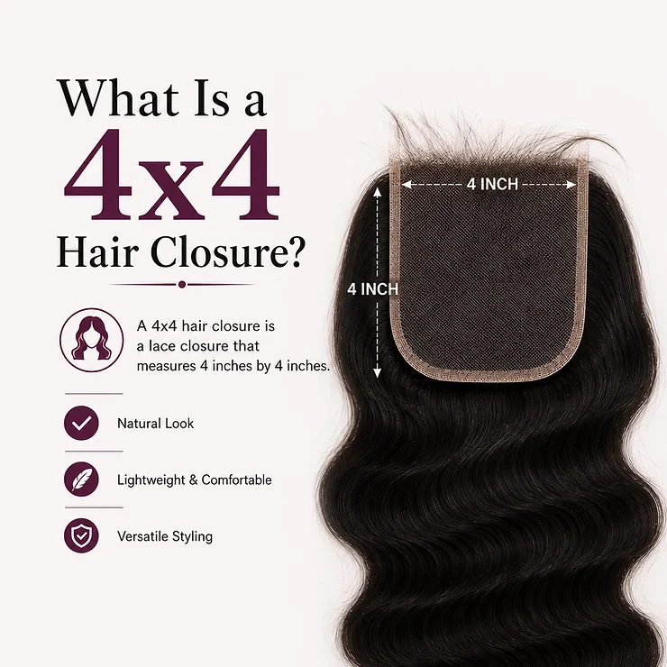

What Is a 4×4 Hair Closure? Meaning, Size & How It Works
Subhani
Aug 28
8 min read
Updated: Nov 10

4×4 closure meaning: the short answer
A 4×4 hair closure is a lace hairpiece measuring approximately four inches wide and four inches deep. It sits at the top-front section of a wig or sew-in, helping create a finished part and a natural-looking scalp effect. When a product is described as a “4×4 closure wig,” it generally means the wig uses a 4×4 lace closure at the top.
What does 4×4 mean on a wig?
The numbers describe the approximate dimensions of the lace area in inches—not the length of the hair, the size of the wig cap or the number of bundles. A 4×4 closure provides a smaller parting area than a 5×5 closure. The exact shape and usable parting area can vary by manufacturer.
What does a 4×4 closure look like?
Picture a compact square of lace at the top of the head, with hair attached to the lace. The rest of the wig may be constructed with tracks or other hair attachment methods. For the best buying decision, look for a close-up photo of the lace from above, an underside view and an image of the wig on a model.
What is a 4×4 closure used for?
It is used to finish a sew-in, build a closure wig, cover the natural parting area and reduce the need to leave your own hair out. The available lace allows a center part and, depending on construction, some side-part flexibility.
Is a 4×4 closure wig glueless?
Not automatically. Some 4×4 closure wigs are designed to be worn without glue, using a well-fitted cap, adjustable straps or other securing features. Other installations may use adhesive. Check the wig construction rather than assuming all 4×4 wigs are glueless.
4×4 closure vs 5×5 closure
The main difference is lace coverage. A 5×5 closure provides a larger parting area, while a 4×4 uses less lace. If you want a deeper side part or more flexibility, compare both before buying.
How to choose a 4×4 closure
Check lace type and color, hair texture, density, cap fit, hair length and whether the product is a standalone closure or a complete wig. Ask for close-up photographs and review the seller’s maintenance instructions.
| Feature | 4x4 Closure | Lace Frontal |
| Coverage area | Top and crown, roughly 4x4 inches | Full hairline, ear to ear |
| Parting flexibility | Any direction within the 4x4 space | Full hairline styling, including pulled-back looks |
| Typical price | Lower | Higher |
| Best for | Everyday wear, natural part styling | Versatile styling, edges left out, updos |
| Installation complexity | Generally simpler | Requires more precise hairline blending |
A full guide to lace frontals covers the frontal side of this comparison in more depth, but the short version is that closures suit wearers who mostly want a natural part without needing to pull their hairline back into every style. Wearers who frequently style their hair away from their face, in high ponytails or slicked-back looks, generally get more practical value from a frontal's full hairline coverage than from a closure's smaller, more central footprint.
Lace Grade Matters as Much as Size
Choosing a 4x4 closure is not just about the size measurement. The lace grade underneath that hand-tied hair has a significant effect on how natural the finished piece looks and how it holds up over time.
Standard Swiss lace offers durability and a reasonably natural finish for most daily wearers. HD lace offers a thinner, more undetectable finish, particularly under bright lighting, but requires more careful handling since it is more delicate. A full breakdown of this distinction is covered in this guide to HD lace versus Swiss lace, which applies directly to choosing the right 4x4 closure for your specific use case.

How a 4x4 Closure Is Installed
A 4x4 closure typically installs through one of two main methods, and understanding both helps set realistic maintenance expectations.
Sew-in method. The closure is sewn onto braided natural hair alongside bundle wefts, distributing tension across braids rather than directly onto the scalp. This method tends to be gentler on natural hair over repeated installs.
Glue or adhesive method. The closure is attached directly to the scalp's perimeter using a bonding adhesive, offering a more seamless, glueless-appearing finish but requiring more careful skin preparation and removal.
Regardless of method, proper installation depends on accurately measuring the head and positioning the closure so its 4x4 inch coverage area aligns with where the wearer naturally parts their hair, since incorrect placement is one of the most common causes of an unnatural-looking result.
Skin Safety and Adhesive Considerations
Adhesive-based closure installs carry a real, documented skin safety consideration that deserves more attention than most product guides give it. A case report published through the National Institutes of Health documented a wig wearer who developed allergic contact dermatitis along the hairline after using a cyanoacrylate-based adhesive to secure a hairpiece.1 A separate peer-reviewed case linked a similar reaction to acrylate compounds found in a wig-fixing adhesive tape.2 A broader review of hair-product contact dermatitis confirmed that reactions along the hairline, exactly where a closure's lace edge meets skin, are a recognized and recurring pattern in dermatology practice.3
This does not mean closures are unsafe to wear. It means a patch test before full adhesive application is genuinely useful, not just cautious marketing advice. The American Academy of Dermatology recommends this same patch-test approach for any product applied directly to the scalp or hairline.4 Salon professionals installing closures for clients should also follow standard ventilation practices when working with bonding adhesives and solvents, consistent with occupational safety guidance for hair salons.5
Choosing the Right Density for a 4x4 Closure
Density refers to how much hair is tied into the lace, separate from the lace size itself. A closure that is too sparse can look thin and reveal more lace than intended, while one that is too dense can look unnaturally thick compared to the wearer's actual hair around it.
Most 4x4 closures are available in a range roughly from 130 percent to 180 percent density. Lower densities in this range tend to look more natural for wearers with fine or medium natural hair, while higher densities suit wearers seeking a fuller, more voluminous look or blending with thicker natural hair textures.
Common Mistakes Buyers Make With 4x4 Closures
Assuming closure size determines hair density or quality. Size, density, and lace grade are three separate specifications, and a supplier should be able to speak to all three independently rather than bundling them into one vague product description.
Choosing a closure size without measuring the actual parting area needed. A 4x4 closure may not provide enough coverage for wearers who frequently switch between drastically different part placements.
Skipping a patch test before full adhesive installation. This single step catches most adhesive sensitivities before they become a visible, uncomfortable reaction along the hairline.
Assuming all 4x4 closures from different suppliers are interchangeable. Lace grade, knot quality, and hair sourcing vary significantly between suppliers even when the size measurement is identical.
Caring for a 4x4 Closure
Closures require a slightly different care routine than full bundles, since the lace base is more delicate than the hair itself. Wash gently, working from the top down rather than scrubbing directly at the lace, and avoid pulling or stretching the lace while wet, since it has less structural give in that state.
Store the closure on a mannequin head or stand between wears to preserve the knot pattern and prevent the lace from creasing. The American Academy of Dermatology's general guidance on preventing extension and weave damage, including managing tension and limiting prolonged wear time, applies directly to closures as well, since the same underlying scalp and hair health principles carry over.
Bleached Knots: Why This Detail Matters More Than It Seems
One detail separates a closure that looks obviously artificial from one that passes as a natural scalp: whether the knots have been bleached. When hair is hand-tied into lace, each knot naturally appears slightly darker than the surrounding hair, since the knot itself concentrates strands together at the root.
Bleaching those knots lightens them just enough to blend with the lace and the wearer's scalp tone, removing the small dark dots that would otherwise be visible along the part. Some suppliers pre-bleach knots before shipping, while others sell closures with natural, unbleached knots that require the buyer or stylist to perform this step separately. Buyers should always confirm which they are receiving, since bleaching knots after purchase requires a careful, targeted technique different from a full bleach service, covered in more detail in this guide to bleaching raw Indian hair.
Closures for Protective Styling and Scalp Health
Beyond the styling benefit, closures serve a genuine protective function for wearers managing hair loss, thinning, or simply wanting to give their natural hair a break from daily manipulation. The American Academy of Dermatology notes that protective styles, including sew-ins with closures, can help shield natural hair from environmental stress and reduce daily styling demands, provided they are not installed with excessive tension or worn for excessively long stretches without removal.7
This makes 4x4 closures a popular recommendation specifically for clients recovering from traction alopecia or managing early-stage thinning, since the smaller coverage area of a 4x4 closure, compared to a larger closure or full wig, generally means less overall tension is applied to the surrounding natural hair during installation.
Wholesale Consistency: Why Sourcing One Supplier for Multiple Sizes Matters
Resellers building out a full closure catalog, spanning 4x4 through larger sizes, benefit significantly from sourcing all of them through a single, consistent supplier rather than mixing vendors across sizes. Lace color, hair texture, and knot quality can vary meaningfully between manufacturers, even when the size specification is technically identical.
A customer who purchases a 4x4 closure and later returns for a larger size expects the same lace tone and hair quality they experienced the first time. Inconsistent sourcing across sizes creates a real risk of mismatched repeat purchases, which can quietly erode customer trust even when each individual product is high quality on its own. Confirming that your wholesale supplier can deliver consistent quality across their full closure size range is worth verifying before building a catalog around multiple sizes from the same source. The Bottom Line
A 4x4 hair closure is a small but genuinely versatile piece, and understanding its actual construction, from lace grade to knot density, helps you choose one that performs the way you actually expect rather than relying on size alone as a quality signal. Explore Tressley Hair's closures, backed by transparent sourcing standards, or request a wholesale quote to compare lace and density options before your next order.
Frequently Asked Questions
How much hair coverage does a 4x4 closure actually provide? It covers roughly the top and crown area of the head, enough for most everyday part styles, but it does not extend to the hairline the way a frontal does.
Can a 4x4 closure be dyed or bleached after purchase? Yes, with careful technique. The hair itself can be colored following standard raw hair bleaching guidelines, though the lace should be treated gently to avoid tearing during the process.
Is a 4x4 closure suitable for beginners installing their first sew-in? Yes. Its smaller size and simpler parting requirements generally make it easier to install and maintain compared to a full lace frontal.
How long does a 4x4 closure typically last with proper care? The lace foundation itself often needs replacing sooner than the hair, generally within 3 to 6 months of regular wear, depending on lace grade and handling.
What is the difference between a 4x4 closure and a lace front wig? A 4x4 closure is a standalone piece used alongside bundles or as the crown of a wig cap, while a lace front wig is a complete, pre-made unit with an entire cap and hairline built in.
Do all 4x4 closures use the same lace type? No. Suppliers offer 4x4 closures in different lace grades, including Swiss, HD, and occasionally French lace, and this choice significantly affects both appearance and durability.
Can a 4x4 closure be worn without any glue or adhesive? Yes, through the sew-in method, where the closure is stitched onto braided natural hair rather than bonded directly to the scalp with adhesive.
How does closure density affect the final price? Higher density closures require more hair to be hand-tied into the same lace area, which increases both material cost and labor time, generally raising the final price accordingly.
Related guides
Read the detailed 4×4 vs 5×5 closure comparison for size differences, or explore single drawn vs double drawn hair bundles when planning a complete installation.